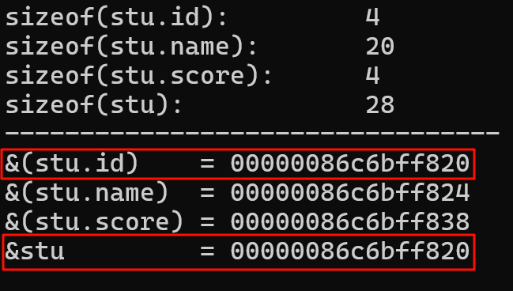
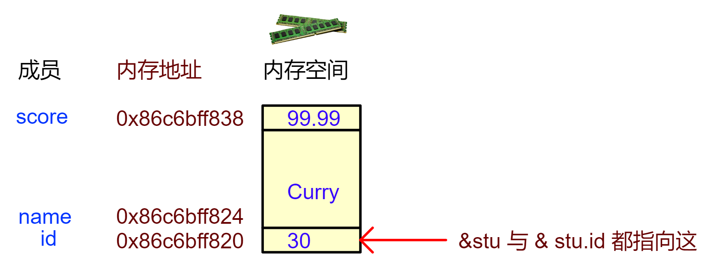
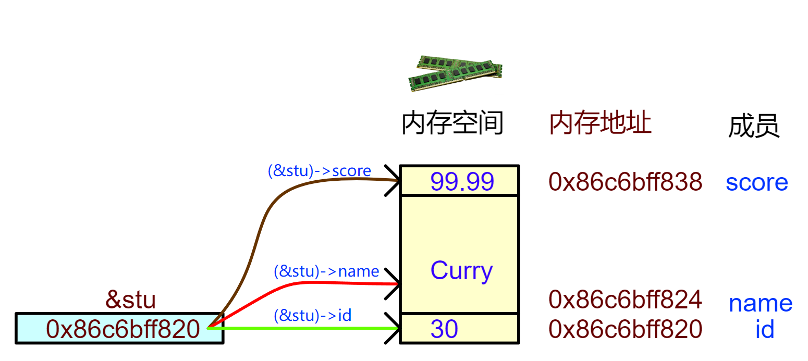
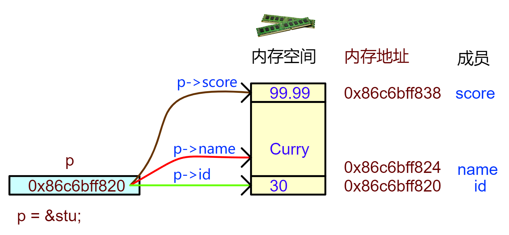

<!DOCTYPE lake>
<h1 data-lake-id="bhkw9" id="bhkw9"><span data-lake-id="ued5d6f94" id="ued5d6f94">1&gt; 结构体的内存布局</span></h1><h2 data-lake-id="sxamY" id="sxamY"><span data-lake-id="u52a0ef29" id="u52a0ef29">1.1&gt; 代码验证</span></h2><p data-lake-id="u5ce1ab35" id="u5ce1ab35"></p><span class="yuque-card-unsupported">[codeblock]</span><p data-lake-id="u5943861e" id="u5943861e"><br/></p><p data-lake-id="u4d02fe85" id="u4d02fe85"><span data-lake-id="u4d4da5f1" id="u4d4da5f1">运行结果：</span></p><p data-lake-id="u50984f44" id="u50984f44"></p><p data-lake-id="u95ce12c1" id="u95ce12c1"><code data-lake-id="u863d62c9" id="u863d62c9"><span data-lake-id="u17b10457" id="u17b10457" style="color: #2F4BDA">&amp;stu</span></code><span data-lake-id="u9bf21551" id="u9bf21551">和 </span><code data-lake-id="u6fe8deb6" id="u6fe8deb6"><span data-lake-id="u05ebda3c" id="u05ebda3c" style="color: #DF2A3F">&amp;(stu.id)</span></code><span data-lake-id="uda9b720d" id="uda9b720d"> 的地址相同，结构体的首地址就是它的第1个成员的地址；</span></p><hr/><h2 data-lake-id="pj7FX" id="pj7FX"><span data-lake-id="u33731411" id="u33731411">1.2&gt; 内存布局</span></h2><p data-lake-id="uc559eb3a" id="uc559eb3a"></p><hr/><h1 data-lake-id="zKjqw" id="zKjqw"><span data-lake-id="u4ad7ca14" id="u4ad7ca14">2&gt; 结构体地址</span></h1><h2 data-lake-id="EViCF" id="EViCF"><span data-lake-id="u275fc2cc" id="u275fc2cc">2.1&gt; 解引用+点运算</span></h2><span class="yuque-card-unsupported">[codeblock]</span><p data-lake-id="u9ccee373" id="u9ccee373"><span data-lake-id="uea9f2d90" id="uea9f2d90" style="color: #2F4BDA">(*(&amp;stu)).id)：</span></p><p data-lake-id="u719872d1" id="u719872d1"><code data-lake-id="u871d10f8" id="u871d10f8"><span data-lake-id="uf85bbfe3" id="uf85bbfe3" style="color: #2F4BDA">&amp;stu</span></code><span data-lake-id="u24fad880" id="u24fad880"> 获取结构体地址，</span></p><p data-lake-id="u8a0993bb" id="u8a0993bb"><code data-lake-id="ud9700541" id="ud9700541"><span data-lake-id="u88b3d907" id="u88b3d907" style="color: #DF2A3F">*(&amp;stu)</span></code><span data-lake-id="uea315722" id="uea315722"> 解引用得到结构体变量stu，</span></p><p data-lake-id="uc1f93c6d" id="uc1f93c6d"><code data-lake-id="uf885e8e4" id="uf885e8e4"><span data-lake-id="u3fbfc34d" id="u3fbfc34d" style="color: #601BDE">*(&amp;stu).id</span></code><span data-lake-id="u3b38886d" id="u3b38886d" style="color: #DF2A3F"> </span><span data-lake-id="ueb85b5c2" id="ueb85b5c2" style="color: #000000">访问到id成员</span><span data-lake-id="uc9e9e50c" id="uc9e9e50c" style="color: #DF2A3F">；</span></p><hr/><h2 data-lake-id="xKbPd" id="xKbPd"><span data-lake-id="u80bbbfab" id="u80bbbfab">2.2&gt;箭头运算符(-&gt;)</span></h2><p data-lake-id="u9b9c77a6" id="u9b9c77a6"><code data-lake-id="ub85bdf3e" id="ub85bdf3e"><span data-lake-id="u9d83208e" id="u9d83208e" style="color: #D22D8D">(*(&amp;stu)).id)</span></code><span data-lake-id="u72fcf6e0" id="u72fcf6e0">这种方式访问变量也太麻烦，又是</span><code data-lake-id="u0580a03d" id="u0580a03d"><strong><span data-lake-id="u2e77201f" id="u2e77201f" style="color: #D22D8D">解引用*</span></strong></code><span data-lake-id="uc39f414e" id="uc39f414e">，又是</span><code data-lake-id="u080aeeb6" id="u080aeeb6"><strong><span data-lake-id="u6b40eb32" id="u6b40eb32" style="color: #D22D8D">点运算.</span></strong></code><span data-lake-id="uadd74cf3" id="uadd74cf3">的，</span></p><p data-lake-id="u07c3758c" id="u07c3758c"><span data-lake-id="uc9b5da0a" id="uc9b5da0a">但凡有麻烦的地方，就有解决麻烦的，-&gt;箭头运算符，就给你把解引用+点运算合并了；</span></p><span class="yuque-card-unsupported">[codeblock]</span><p data-lake-id="u10c1dfe4" id="u10c1dfe4"></p><p data-lake-id="uf3c580f0" id="uf3c580f0"><span data-lake-id="uf773bb4c" id="uf773bb4c">😮</span><span data-lake-id="ua9663c54" id="ua9663c54">箭头运算符</span><code data-lake-id="ue6db3631" id="ue6db3631"><strong><span class="lake-fontsize-16" data-lake-id="u74147ed4" id="u74147ed4" style="color: #DF2A3F">-&gt;</span></strong></code><span data-lake-id="u03173360" id="u03173360">表示指针太象形了！</span></p><hr/><p data-lake-id="u55186b03" id="u55186b03"><span data-lake-id="u24bfca77" id="u24bfca77">访问结构体成员有3种方式：</span></p><p data-lake-id="u71e143b2" id="u71e143b2"><span data-lake-id="u8c28abf6" id="u8c28abf6">1️⃣</span><span data-lake-id="u56938567" id="u56938567">直接访问：</span><code data-lake-id="u0957a6d2" id="u0957a6d2"><span data-lake-id="u3fa015b4" id="u3fa015b4">结构体变量.成员</span></code><span data-lake-id="ucfaa4480" id="ucfaa4480">，</span><code data-lake-id="u51363df9" id="u51363df9"><span data-lake-id="uf2240636" id="uf2240636">stu.id</span></code><span data-lake-id="uc0ee3d1a" id="uc0ee3d1a">；</span></p><p data-lake-id="ucfa8500c" id="ucfa8500c"><span data-lake-id="ucfc04c90" id="ucfc04c90">2️⃣</span><span data-lake-id="u5117571d" id="u5117571d">通过地址解引用：</span><code data-lake-id="ubf5e5ffc" id="ubf5e5ffc"><span data-lake-id="ubd1408a0" id="ubd1408a0">(*结构体指针).成员</span></code><span data-lake-id="uf6a46a4a" id="uf6a46a4a">，</span><code data-lake-id="u6c94c952" id="u6c94c952"><span data-lake-id="u021bc48a" id="u021bc48a">(*(&amp;stu)).id)</span></code><span data-lake-id="ua850dc69" id="ua850dc69">;</span></p><p data-lake-id="uc7327979" id="uc7327979"><span data-lake-id="ua1da5e25" id="ua1da5e25">3️⃣</span><span data-lake-id="u0b15ad98" id="u0b15ad98">箭头运算符：</span><code data-lake-id="u45b76221" id="u45b76221"><strong><span data-lake-id="u1497e1eb" id="u1497e1eb" style="color: #2F4BDA">结构体指针-&gt;成员</span></strong></code><span data-lake-id="u2fcee17f" id="u2fcee17f">，</span><code data-lake-id="u787c8da7" id="u787c8da7"><span data-lake-id="ua5c5500f" id="ua5c5500f">(&amp;stu)-&gt;id</span></code><span data-lake-id="u1ff54fd2" id="u1ff54fd2">；</span></p><hr/><h1 data-lake-id="hXZug" id="hXZug"><span data-lake-id="u3d89b8bf" id="u3d89b8bf">3&gt; </span><strong><span class="lake-fontsize-12" data-lake-id="ua5fd741f" id="ua5fd741f" style="color: initial">结构体指针变量</span></strong></h1><span class="yuque-card-unsupported">[codeblock]</span><p data-lake-id="ua7acb5ec" id="ua7acb5ec"></p><hr/><h1 data-lake-id="YTf1z" id="YTf1z"><span data-lake-id="ub80a79e6" id="ub80a79e6">🐻</span><span data-lake-id="u2c351b22" id="u2c351b22">实践练习：</span></h1><p data-lake-id="u0a1fba69" id="u0a1fba69"><span data-lake-id="u43c2e1a0" id="u43c2e1a0">功能需求：员工信息管理</span></p><p data-lake-id="uc12c5050" id="uc12c5050"><span data-lake-id="u45f31e5e" id="u45f31e5e">1&gt; 定义Employee结构体，使用指针实现信息打印和员工薪资修改。</span></p><p data-lake-id="u96c969a6" id="u96c969a6"><span data-lake-id="u40d61fd3" id="u40d61fd3">2&gt; 重点画出内存布局图，标注成员位置和指针指向关系。</span></p><table class="lake-table" data-lake-id="XKSZQ" id="XKSZQ" margin="true" style="width: 342px" width-mode="contain"><colgroup><col width="153"/><col width="189"/></colgroup><tbody><tr data-lake-id="ube193fc7" id="ube193fc7" style="height: 36px"><td colspan="2" data-lake-id="u520d67cd" id="u520d67cd"><p data-lake-id="u2008360f" id="u2008360f" style="text-align: center"><span data-lake-id="u883da8e2" id="u883da8e2">员工信息</span></p></td></tr><tr data-lake-id="uc54e38f7" id="uc54e38f7"><td data-lake-id="u4eb0e76b" id="u4eb0e76b" style="background-color: #81BBF8"><p data-lake-id="ua1913557" id="ua1913557"><span data-lake-id="u74d153a2" id="u74d153a2">工号（id）</span></p></td><td data-lake-id="u080b4b62" id="u080b4b62"><p data-lake-id="u65cdbc3e" id="u65cdbc3e"><span data-lake-id="u0693ad18" id="u0693ad18">23</span></p></td></tr><tr data-lake-id="u1496e293" id="u1496e293" style="height: 36px"><td data-lake-id="ubf5b88cb" id="ubf5b88cb" style="background-color: #81BBF8"><p data-lake-id="ued16c8da" id="ued16c8da"><span data-lake-id="ufedff64d" id="ufedff64d">姓名（name）</span></p></td><td data-lake-id="u33f5bec8" id="u33f5bec8"><p data-lake-id="u37705eb4" id="u37705eb4"><span data-lake-id="u668399bd" id="u668399bd">Jordan</span></p></td></tr><tr data-lake-id="u0f00dd0c" id="u0f00dd0c" style="height: 36px"><td data-lake-id="uc13dd3c4" id="uc13dd3c4" style="background-color: #81BBF8"><p data-lake-id="uaf12b2d4" id="uaf12b2d4"><span data-lake-id="uda7c95dc" id="uda7c95dc">工龄（service）</span></p></td><td data-lake-id="ueede105f" id="ueede105f"><p data-lake-id="u9fe780b6" id="u9fe780b6"><span data-lake-id="u46bdfebe" id="u46bdfebe">20</span></p></td></tr><tr data-lake-id="ub2adf997" id="ub2adf997"><td data-lake-id="ua7849d54" id="ua7849d54" style="background-color: #81BBF8"><p data-lake-id="ucd0af8d7" id="ucd0af8d7"><span data-lake-id="u4b684ebb" id="u4b684ebb">工资（salary）</span></p></td><td data-lake-id="u5fca605f" id="u5fca605f"><p data-lake-id="uadee5cb0" id="uadee5cb0"><span data-lake-id="ue0d6d3b6" id="ue0d6d3b6">288888.88</span></p></td></tr></tbody></table>